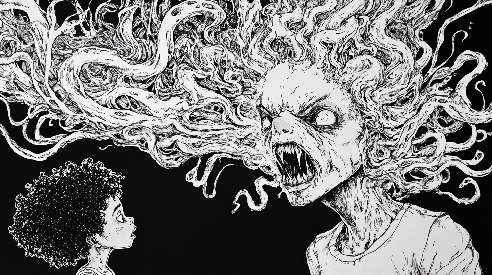

Story

My Mother the Monster
There was always something unsettling about my mother. Even as a child, I’d catch glimpses of her in the corners of my eyes—her face a writhing mass of shadows and sharp teeth, a nightmare caught in the thin veil of daylight. But I was too young to understand, and she was always quick to dismiss my fears with a soft, “It’s nothing, dear.”
My father had died when I was very young, and my mother was my only family. We lived in an old, creaky house on the edge of town. It was large and dark, with long hallways and narrow staircases that seemed to go on forever. The house was always cold, even in summer, and the walls seemed to breathe with a life of their own.
As I grew older, I began to notice changes in my mother. Her skin, once pale and smooth, had started to take on a strange, mottled texture, as if the flesh was trying to crawl off her bones. Her eyes, which were once a soft brown, had darkened to a deep, unsettling shade of black, with pupils that seemed to shift and squirm on their own.
One night, I was lying in bed, unable to sleep. The house was unusually silent, the kind of silence that presses down on you like a thick, suffocating blanket. I heard a soft scratching sound coming from the hallway outside my room. It was faint but persistent, like something was dragging itself slowly across the floor.
Curiosity got the better of me, and I crept out of bed to investigate. The hallway was cloaked in darkness, the only light coming from a flickering bulb in the far corner. As I tiptoed down the corridor, the scratching grew louder, more frantic.
When I reached the source of the noise, I froze. My mother was standing in the hallway, her back to me. Her body was contorted in unnatural angles, limbs twisted as if they had been broken and reset in the wrong places. Her head was turned almost completely around, eyes wide and hollow, staring directly at me through the dark.
“Mom?” I whispered, my voice trembling.
She turned slowly, and her face came into the light. Her mouth was stretched into a grotesque grin, revealing rows of needle-sharp teeth that seemed to extend indefinitely. Her smile was not a smile but a gaping maw of hunger. Her fingers, elongated and claw-like, scraped against the walls, leaving deep gouges in the wood.
The room grew colder as she moved towards me, her movements jerky and unnatural. The scratching sound grew louder, more desperate, as if something else was trying to get out.
Panic surged through me, and I turned to flee, but the hallway seemed to stretch endlessly. The darkness pressed in from all sides, the walls closing in. My mother’s laughter echoed around me, a high-pitched, inhuman sound that filled the space with dread.
I stumbled back to my room and slammed the door, pressing my back against it. I could hear her scraping and scratching on the other side, her voice whispering through the cracks. “You can’t hide, dear. You can’t escape.”
Hours passed, and the scratching eventually stopped. I dared to open the door, but the hallway was empty. My mother was gone, leaving only a deep chill and the faint, lingering scent of decay.
I never saw her again after that night. I moved away from the house, but I could never shake the feeling of her presence, lurking just beyond the edges of my vision. Sometimes, late at night, I still hear that scratching sound, a reminder that some monsters don’t need to be hidden under the bed or in the closet. Some monsters are closer than you think—they’re the ones you call ‘Mom.’
The house was eventually abandoned, its walls scarred by those who had come before me. They said it was haunted, but I knew the truth. There are things that live in the shadows, things that wear the faces of those we love. And sometimes, they’re more monstrous than we can ever imagine.
Go Back